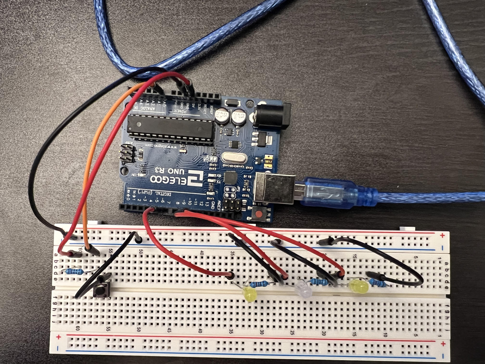
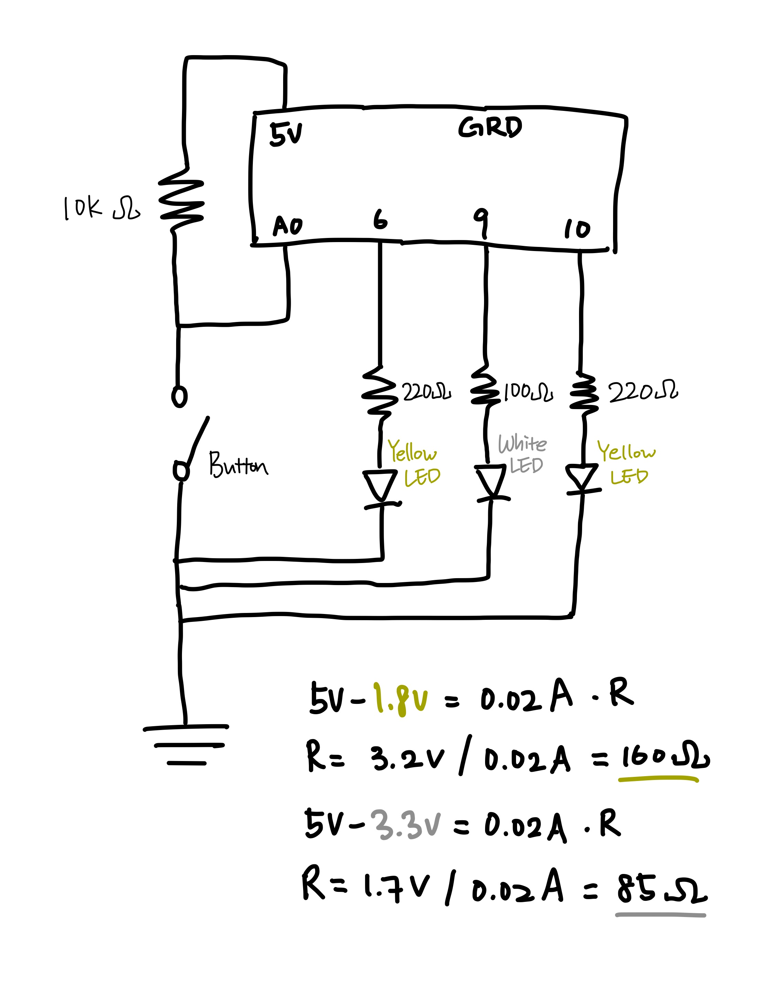
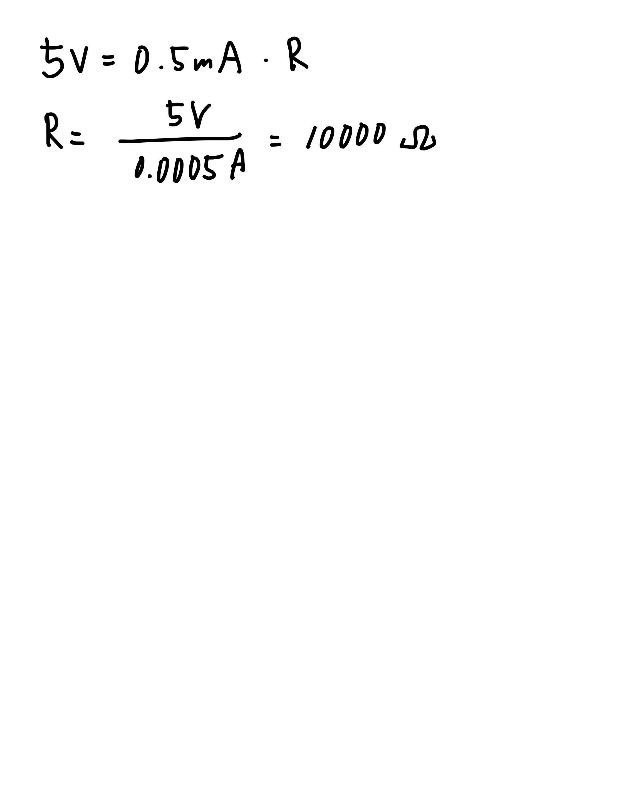

Fade!

Cirucuit!

Schematic!

Yellow LED has a voltage drop of 1.8V. Optimal resistance is 160 ohms, so I used a 220-ohm resistor to be safe. White LED has a voltage drop of 3.3V. Optimal resistance is 85 ohms, so I used a 100-ohm resistor to be safe.
The Pull-up resistor is 10k ohms, because I want the state of the button to read high when not pressed, and low when pressed(but not too low, I want 0.5mA).

Code:
int yellow = 0; //current state of the yellow LED. 0 when off.
int white = 1; //current state of the white LED. 1 when on.
void setup() {
// put your setup code here, to run once:
pinMode(6, OUTPUT); // initialize digital pin 6 as an output. This is a yellow LED.
pinMode(9, OUTPUT); // initialize digital pin 9 as an output. This is the white LED.
pinMode(10, OUTPUT); // initialize digital pin 10 as an output. This is a yellow LED.
digitalWrite(9, HIGH); // Start with the white LED on.
}
void loop() {
// put your main code here, to run repeatedly:
int clicked = digitalRead(A0); //state of the button. 1 when not clicked, 0 when clicked.
if (clicked == 0 && white == 1) { //if switch is clicked and white LED is currently on
for (int i = 0; i < 255; i++) { // in 255 levels of brightness
analogWrite(6, i); // turn the yellow LED on
analogWrite(10, i); // turn the yellow LED on
analogWrite(9, map(i, 0, 255, 255, 0)); //dim the white LED
delay(1); // wait a little
}
white = 0; // change state of white LED to off
yellow = 1; // change state of yellow LED to on
}
if (clicked == 0 && yellow == 1) { //if switch is clicked and yellow LED is currently on
for (int i = 0; i < 255; i++) {
analogWrite(9, i); // turn the white LED on
analogWrite(6, map(i, 0, 255, 255, 0)); //dim the yellow LED
analogWrite(10, map(i, 0, 255, 255, 0)); //dim the yellow LED
delay(1); // wait a little
}
white = 1; // change state of white LED to off
yellow = 0; // change state of yellow LED to on
}
}